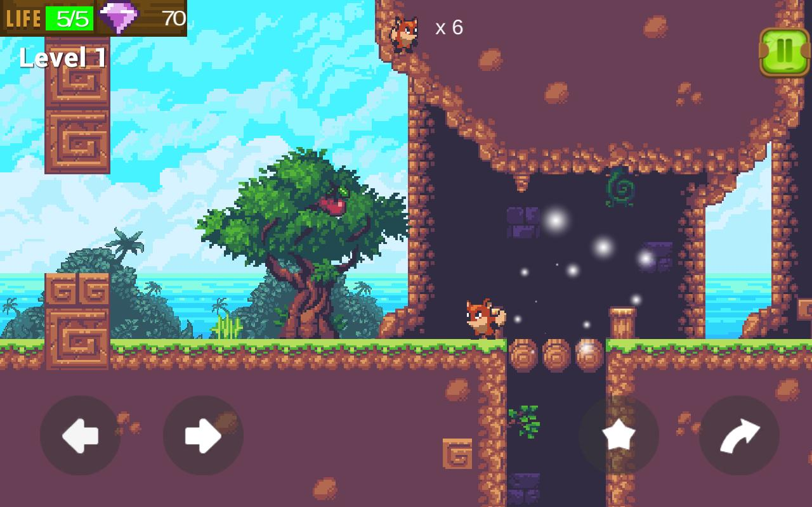

The only time success comes before work is in the dictionary.
Brais Cuns Varela (más conocido como MurkyCuns), es un joven estudiante que actualmente reside en Galicia, España.
Interesado en el mundo de la programación, el diseño web y la creación de videojuegos. Comenzó a formarse sobre estas materias hace más de 5 años, interesado por averiguar como estaban construídas las obras que tanto disfrutaba consumir.
Actualmente es el fundador de Murky's Project, a community for freelance developers. A la par, se dedica a formarse en ciclos formativos y cursos académicos oficiales sobre el mundo de la programación, diseño y administración de redes.
Tambien trata de trabajar en nuevos proyectos siempre que le sea posible, con el interés de disfrutar y aprender más sobre este nuevo mundo y encontrar nuevas oportunidades de futuro.
Quieres que trabajemos juntos?
murkycuns@gmail.com
Estudios realizados:
Una recopilación de todos los Estudios Oficiales que he realizado a lo largo del tiempo, brindados por organismos de mi zona o de países extranjeros, así como todos aquellos cursos online no oficiales que he realizado para dotarme de más conocimiento.
CFGS de ASIR— Ciclo Formativo de Grado Superior en Administración de Sistemas Informáticos en Red.
CFGS de DAM— Ciclo Formativo de Grado Superior en Desarrollo de Aplicaciones Multiplataforma.
Proyectos realizados:
Una recopilación de todos los Proyectos en los que he participado a lo largo de los años, organizados y categorizados mediante un índice y comentando el rol y desempeño de cada uno de ellos.
Project: FOXHOUND™— Videojuego 2D creado utilizando el motor Unity.

Project: SLOWBURN™— Podcast variado en conjunto con compañeros.
Project: COVENANT™ — Página Web Personal creada a modo de porfolio utilizando puro HTML, CSS, JS y PHP.
Soy plenamente consciente de lo afortunado que soy de vivir en la época que vivo. Poder formarme y trabajar en un mundo tán en auge es una oportunidad que no se debe desperdiciar. Continuaré esforzándome día a día para conseguir mis metas y propósitos, sacar nuevos proyectos a la luz y acabar orgulloso de los pasos que me han llevado a estar en el lugar en que me encuentro.